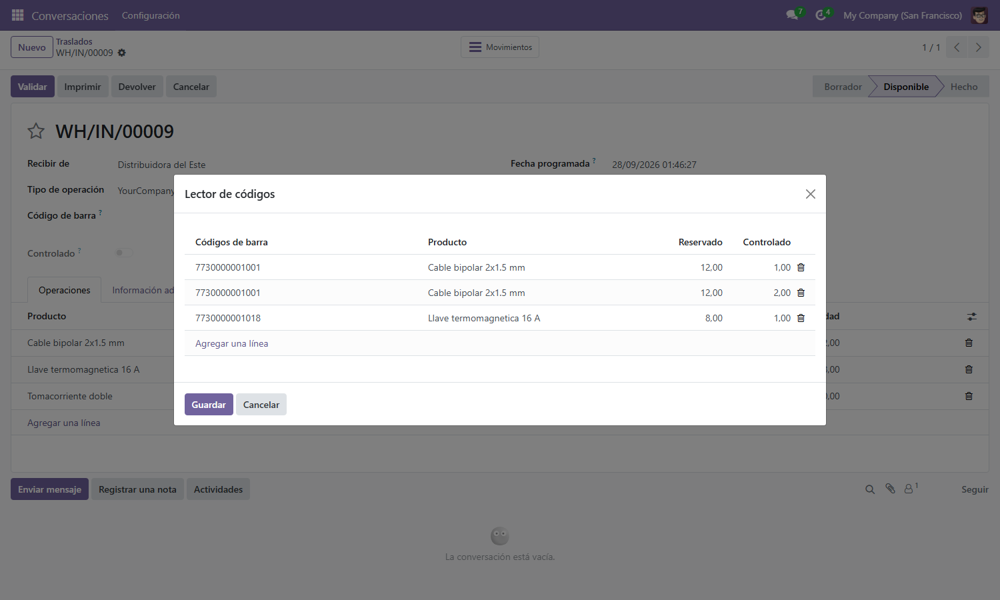
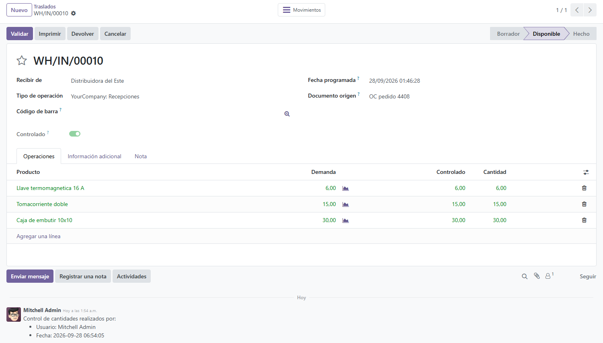

<section class="oe_container">
  <div class="oe_row oe_spaced" style="max-width:840px;margin:0 auto;padding:24px;font-family:Poppins,Arial,Helvetica,sans-serif">
    <div style="border-left:6px solid #0FA656;padding-left:18px;margin-bottom:18px">
      <h1 style="color:#1A252C;margin:0 0 6px;font-size:29px">Receipts and deliveries checked with a barcode scanner</h1>
      <p style="color:#555;font-size:17px;margin:0;line-height:1.45">Count what really enters and leaves the warehouse by scanning every product, with no need for the Odoo Enterprise Barcode module.</p>
    </div>
    <p style="margin:0 0 20px;color:#333;line-height:1.6;font-size:15px">Warehouse errors start by accepting quantities nobody counted: you receive what the paper says and you ship what the screen says. This module adds a <b>quantity control by scanning</b> to stock transfers: every barcode read adds one checked unit, and the operation is not verified until what was counted matches what was asked for.</p>
<h2 style="color:#1A252C;font-size:21px;margin:26px 0 10px">What it does</h2>
<ul style="color:#333;line-height:1.7;font-size:15px;margin:0;padding-left:22px">
<li><b>Barcode reader built into the transfer:</b> every scan looks the product up by its barcode and adds 1 to the checked quantity.</li>
<li><b>Validation on the spot:</b> it rejects products that do not belong to the transfer and warns when the demanded quantity would be exceeded.</li>
<li><b>"Checked" flag with user and date</b>, plus an automatic note in the chatter of the transfer: who counted and when is on the record.</li>
<li><b>Receipts starting at zero:</b> confirming a purchase order sets the done quantities to 0, so the receipt is counted for real instead of accepting the pre-filled quantities.</li>
<li>It runs on Odoo Community: the Enterprise Barcode module is not required.</li>
</ul>
<h2 style="color:#1A252C;font-size:21px;margin:26px 0 10px">The module on screen</h2>

<p style="margin:0 0 16px;color:#777;font-size:13px;line-height:1.45">Barcode reader wizard on a transfer / Asistente lector de c&#243;digos sobre un traslado</p>

<p style="margin:0 0 20px;color:#777;font-size:13px;line-height:1.45">Transfer checked, with the counted quantity per line / Traslado controlado, con la cantidad contada por l&#237;nea</p>
<h2 style="color:#1A252C;font-size:21px;margin:26px 0 10px">Who it is for</h2>
<ul style="color:#333;line-height:1.7;font-size:15px;margin:0;padding-left:22px">
<li>Warehouses receiving goods that want a <b>real count against the purchase order</b>, not a blind confirmation.</li>
<li>Shipping desks that <b>check every package before delivering</b>, with the record of who checked it visible to sales and administration.</li>
</ul>
<h2 style="color:#1A252C;font-size:21px;margin:26px 0 10px">How it works</h2>
<ol style="color:#333;line-height:1.7;font-size:15px;margin:0;padding-left:22px">
<li>Open the transfer (a receipt or a delivery) and launch the barcode reader.</li>
<li>Scan each unit: the system identifies it and adds it to the checked quantity.</li>
<li>If something does not belong to the transfer, or the quantity is exceeded, it is rejected on the spot.</li>
<li>With every line verified, the transfer is flagged as checked, with the user and the date.</li>
</ol>
<h2 style="color:#1A252C;font-size:21px;margin:26px 0 10px">Frequently asked questions</h2>
<p style="margin:0 0 4px;color:#1A252C;font-size:15px"><b>Do I need Odoo Enterprise?</b></p><p style="margin:0 0 12px;color:#333;line-height:1.6;font-size:15px">No. It runs on Community and on Enterprise; the point is precisely not to depend on the Enterprise Barcode module.</p>
<p style="margin:0 0 4px;color:#1A252C;font-size:15px"><b>Which scanner do I need?</b></p><p style="margin:0 0 12px;color:#333;line-height:1.6;font-size:15px">Any barcode scanner that types like a keyboard into the scanning field.</p>
<p style="margin:0 0 4px;color:#1A252C;font-size:15px"><b>Can I check without scanning?</b></p><p style="margin:0 0 12px;color:#333;line-height:1.6;font-size:15px">Yes: the checked flag can be ticked by hand, and the user and the date are recorded all the same.</p>
<p style="margin:0 0 4px;color:#1A252C;font-size:15px"><b>Does it need any setup?</b></p><p style="margin:0 0 12px;color:#333;line-height:1.6;font-size:15px">None. It only requires the barcode filled in on the products.</p>
<hr style="border:none;border-top:1px solid #DDE4E7;margin:26px 0"/>
<h2 style="color:#1A252C;font-size:23px;margin:0 0 6px">Recepciones y entregas controladas con lector de c&#243;digo de barras</h2>
<p style="color:#555;font-size:16px;margin:0 0 16px;line-height:1.45">Cuente lo que de verdad entra y sale del dep&#243;sito escaneando cada producto, sin necesidad del m&#243;dulo Barcode de Odoo Enterprise.</p>
<p style="margin:0 0 20px;color:#333;line-height:1.6;font-size:15px">Los errores de dep&#243;sito nacen de aceptar cantidades sin contar: se recibe lo que dice el papel y se entrega lo que dice la pantalla. Este m&#243;dulo agrega a los traslados de stock un <b>control de cantidades por escaneo</b>: cada lectura del c&#243;digo de barras suma una unidad controlada, y la operaci&#243;n no queda verificada hasta que lo contado coincide con lo pedido.</p>
<h3 style="color:#1A252C;font-size:19px;margin:22px 0 10px">Qu&#233; hace</h3>
<ul style="color:#333;line-height:1.7;font-size:15px;margin:0;padding-left:22px">
<li><b>Lector de c&#243;digos integrado al traslado:</b> cada escaneo busca el producto por su c&#243;digo de barras y suma 1 a la cantidad controlada.</li>
<li><b>Validaci&#243;n en el momento:</b> rechaza productos que no pertenecen a la orden y avisa si se supera la cantidad demandada.</li>
<li><b>Marca de controlado con usuario y fecha</b>, y nota autom&#225;tica en el chatter del traslado: queda registrado qui&#233;n cont&#243; y cu&#225;ndo.</li>
<li><b>Recepciones con cantidades en cero:</b> al confirmar una orden de compra, las cantidades hechas arrancan en 0 para forzar el conteo real, en lugar de aceptar las cantidades precompletadas.</li>
<li>Funciona en Odoo Community: no requiere el m&#243;dulo Barcode de Enterprise.</li>
</ul>
<h3 style="color:#1A252C;font-size:19px;margin:22px 0 10px">Para qui&#233;n es</h3>
<ul style="color:#333;line-height:1.7;font-size:15px;margin:0;padding-left:22px">
<li>Dep&#243;sitos que reciben mercader&#237;a y quieren <b>conteo real contra la orden de compra</b>, no una confirmaci&#243;n a ciegas.</li>
<li>Expedici&#243;n que <b>controla cada bulto antes de entregar</b>, con el registro de qui&#233;n control&#243; visible para ventas y administraci&#243;n.</li>
</ul>
<h3 style="color:#1A252C;font-size:19px;margin:22px 0 10px">C&#243;mo funciona</h3>
<ol style="color:#333;line-height:1.7;font-size:15px;margin:0;padding-left:22px">
<li>Abra el traslado (recepci&#243;n o entrega) y ejecute el lector de c&#243;digos.</li>
<li>Escanee cada unidad: el sistema la identifica y suma a la cantidad controlada.</li>
<li>Si algo no pertenece a la orden o se pasa de cantidad, el sistema lo rechaza en el momento.</li>
<li>Con todas las l&#237;neas verificadas, el traslado queda marcado como controlado, con usuario y fecha.</li>
</ol>
<h3 style="color:#1A252C;font-size:19px;margin:22px 0 10px">Preguntas frecuentes</h3>
<p style="margin:0 0 4px;color:#1A252C;font-size:15px"><b>&#191;Necesito Odoo Enterprise?</b></p><p style="margin:0 0 12px;color:#333;line-height:1.6;font-size:15px">No. Funciona en Community y Enterprise; justamente evita depender del m&#243;dulo Barcode de Enterprise.</p>
<p style="margin:0 0 4px;color:#1A252C;font-size:15px"><b>&#191;Qu&#233; lector necesito?</b></p><p style="margin:0 0 12px;color:#333;line-height:1.6;font-size:15px">Cualquier lector de c&#243;digo de barras que escriba como teclado sobre el campo de escaneo.</p>
<p style="margin:0 0 4px;color:#1A252C;font-size:15px"><b>&#191;Puedo controlar sin escanear?</b></p><p style="margin:0 0 12px;color:#333;line-height:1.6;font-size:15px">S&#237;: la marca de controlado puede completarse manualmente, y queda igual el registro de usuario y fecha.</p>
<p style="margin:0 0 4px;color:#1A252C;font-size:15px"><b>&#191;Necesita configuraci&#243;n?</b></p><p style="margin:0 0 12px;color:#333;line-height:1.6;font-size:15px">No. Solo requiere el c&#243;digo de barras cargado en los productos.</p>
<div style="background:#E9F7F0;border:1px solid #DDE4E7;border-radius:12px;padding:20px 22px;margin:28px 0 0">
      <h2 style="color:#1A252C;font-size:19px;margin:0 0 8px">Interested in this module?</h2>
      <p style="margin:0 0 10px;color:#333;line-height:1.6;font-size:15px">If you need it for another Odoo version, found a bug, or want to know more about us and our implementations, write to <a href="mailto:info@polpo.uy" style="color:#0FA656;text-decoration:none"><b>info@polpo.uy</b></a>, leave your question in our <a href="https://polpo.uy/contactus?utm_source=odoo_apps&amp;utm_medium=referral&amp;utm_campaign=qapps_codbarra" style="color:#0FA656;text-decoration:none"><b>contact form</b></a> or see what we do at <a href="https://polpo.uy/?utm_source=odoo_apps&amp;utm_medium=referral&amp;utm_campaign=qapps_codbarra" style="color:#0FA656;text-decoration:none"><b>polpo.uy</b></a>.</p>
      <p style="margin:0;color:#4a5a52;line-height:1.55;font-size:13px"><i>Si lo necesita en otra versi&#243;n de Odoo, encontr&#243; un error o quiere saber m&#225;s sobre nosotros, escr&#237;banos a info@polpo.uy o use nuestro formulario de contacto.</i></p>
    </div>
<hr style="border:none;border-top:1px solid #DDE4E7;margin:26px 0"/>
    <p style="color:#888;font-size:13px;margin:0">Developed by <a href="https://polpo.uy" style="color:#0FA656;text-decoration:none">Polpo ERP</a>, Odoo implementers from Uruguay for the whole region. Support: info@polpo.uy</p>
  </div>
</section>
